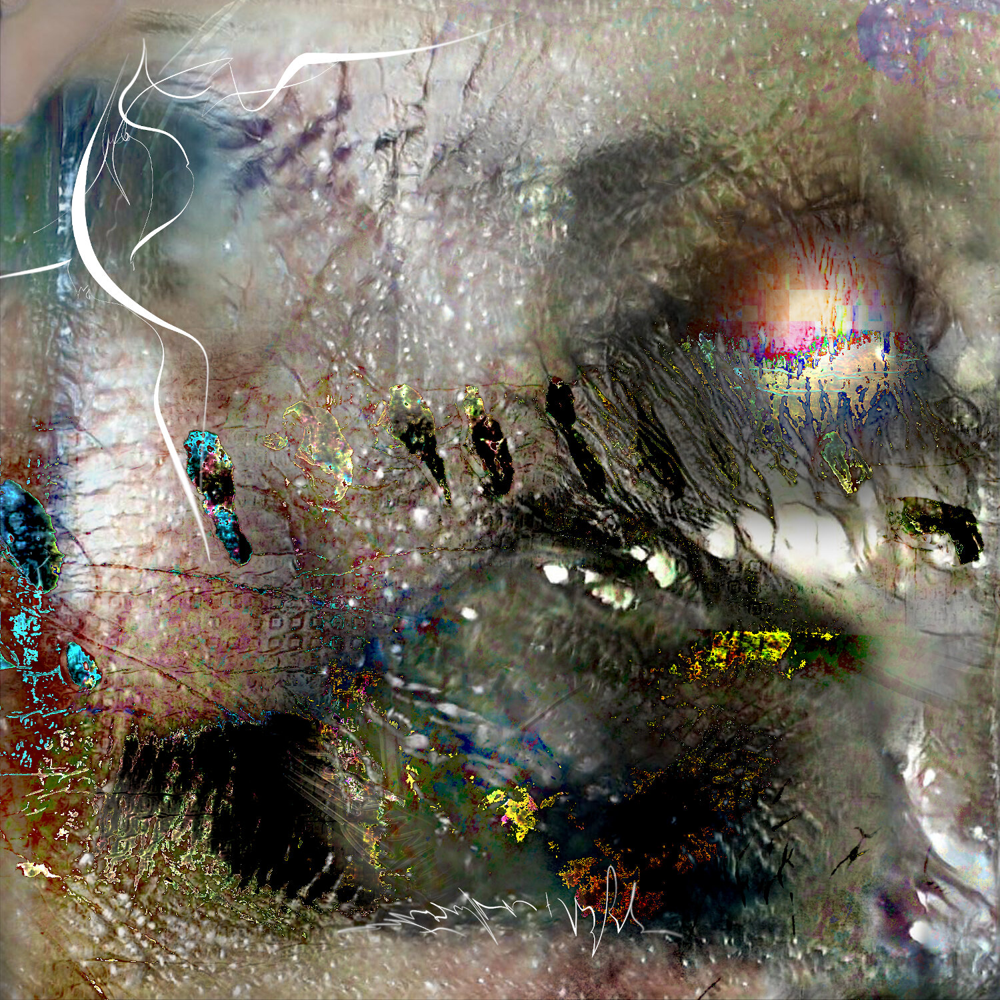
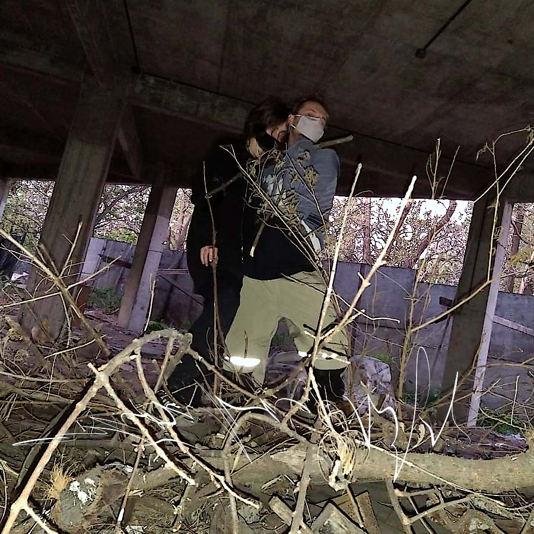
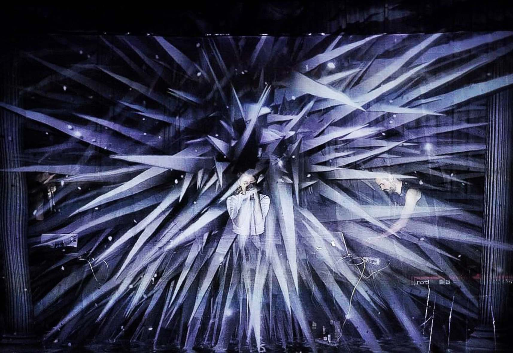
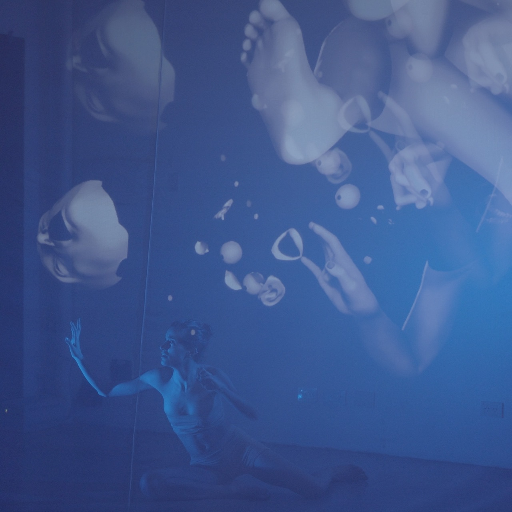

<div id="guts">
    <div class="about">
        <div class="align-right">
            <p>nudos ep, music & artwork w/<a href="http://astrosuka.com">astrosuka</a></p>
            <p>[2020]</p>
        </div>
        
        
        <iframe class="drop-shadow" style="border: 0; width: 100%; height: 241px;" src="https://bandcamp.com/EmbeddedPlayer/album=4284074734/size=large/bgcol=ffffff/linkcol=333333/artwork=none/transparent=true/" seamless><a href="https://astrosuka.bandcamp.com/album/nudos">Nudos by Astrosuka + Sofja</a></iframe>

        

        <hr>

        <p class="align-right">more releases</p>

        <div class="drop-shadow">
            <!-- mecha -->
            <iframe style="border: 0; width: 100%; height: 120px;" src="https://bandcamp.com/EmbeddedPlayer/album=981411004/size=large/bgcol=ffffff/linkcol=333333/tracklist=false/artwork=small/track=4118697258/transparent=true/" seamless><a href="https://trrueno.bandcamp.com/album/mecha03-trr-014">MECHA03 [TRR-014] by Sofja</a></iframe>

            <!-- resilio -->
            <iframe width="100%" height="120" scrolling="no" frameborder="no" allow="autoplay" src="https://w.soundcloud.com/player/?url=https%3A//api.soundcloud.com/tracks/1031663746&color=%23000000&auto_play=false&hide_related=false&show_comments=true&show_user=true&show_reposts=false&show_teaser=true"></iframe>

            <!-- torre i -->
            <iframe width="100%" height="120" scrolling="no" frameborder="no" allow="autoplay" src="https://w.soundcloud.com/player/?url=https%3A//api.soundcloud.com/tracks/1015332046&color=%23000000&auto_play=false&hide_related=false&show_comments=true&show_user=true&show_reposts=false&show_teaser=true"></iframe>

            <!-- umbra -->
            <iframe style="border: 0; width: 100%; height: 120px;" src="https://bandcamp.com/EmbeddedPlayer/album=2012741488/size=large/bgcol=ffffff/linkcol=333333/tracklist=false/artwork=small/track=1432072741/transparent=true/" seamless><a href="https://thrdeyevsn.bandcamp.com/album/thrdeyevsn-50-no-borders-no-territories">THRDEYEVSN 5.0 - NO BORDERS NO TERRITORIES by BUNGALOVV + SOFJA</a></iframe>

            <hr>
    
            <!-- boiler room -->
            <iframe width="100%" height="120" scrolling="no" frameborder="no" allow="autoplay" src="https://w.soundcloud.com/player/?url=https%3A//api.soundcloud.com/tracks/1004652490&color=%23000000&auto_play=false&hide_related=false&show_comments=true&show_user=true&show_reposts=false&show_teaser=true"></iframe>
            
            <!-- balam -->
            <iframe width="100%" height="120" scrolling="no" frameborder="no" allow="autoplay" src="https://w.soundcloud.com/player/?url=https%3A//api.soundcloud.com/tracks/625639344&color=%23000000&auto_play=false&hide_related=false&show_comments=true&show_user=true&show_reposts=false&show_teaser=true"></iframe>
            
            
            
            <!-- <iframe style="border: 0; width: 100%; height: 120px;" src="https://bandcamp.com/EmbeddedPlayer/album=4140246050/size=large/bgcol=ffffff/linkcol=333333/tracklist=false/artwork=small/track=4094816656/transparent=true/" seamless><a href="https://abruitsecret.bandcamp.com/album/sodiur-i-xiv">sodiur i-xiv by sofja</a></iframe> -->
        </div>

        <p>performed live at Museum of Modern Art Buenos Aires, CC San Martin, Centro de Arte Sonoro (Casa Nacional del Bicentenario), El Internado Valparaiso (CL)</p>
        
        <hr>
        <div class="about align-right">
            <a href="https://www.instagram.com/instrumentooptico.io/">I-O (instrumento optico)</a>
            <p>multisensorial proyect directed by <a href="https://www.instagram.com/jsfnbrrx/?hl=es-la">jsfnbrrx</a></p>
        </div>     
        
        <p>live at MutekAR, Sulfure Festival (FR), Teatro Mandril, La Casa de la Pampa, Roseti Espacio, La Invisible (UY)</p>

        <hr>
        <div class="align-right">
            <p>sound design for <a href="https://www.victoriamomeno.com/fase-3/">FASE3</a></p>
            <p>an investigation where science and art merge to carry out bioethical dilemmas in the artistic field in relation to the imminent dangers of an unleashed pharmaceutical-electronic-bio-nano technological industry.</p>
            <p>upcoming installation performance based on scientific evidence</p>
        </div>
        <div class="embed drop-shadow">
            <iframe class="responsive-iframe" width="560" height="315" src="https://www.youtube.com/embed/8SCs8V41lN4" frameborder="0" allow="accelerometer; autoplay; clipboard-write; encrypted-media; gyroscope; picture-in-picture" allowfullscreen></iframe>
        </div>
        
        <p>Victoria Momeño: idea, dramaturgy, performer</p>
        <p>Joaquin Piriz & Nicolas Fassi: cientific collaboration</p>
        <p>Frenetik Void: 3D design</p>
        <p>Matias Brunacci: visual design, virtual reality</p>
        <p>Eliana Guzman: developer, techno-costumes, biotextiles</p>
        <p>Ernesto Bechara: lightning design</p>
        <p>Maria Insua: scenic direction</p>
        <p>Luiyi Vector: movement design</p>

        <hr>
        <div class="align-right">
            <p>original music for PLAGA</p>
            <p>presented in the sub 30 dance cycle of the Centro Cultural Rojas</p>
            <p>[2019]</p>
        </div>

        <div class="embed drop-shadow">
            <iframe class="responsive-iframe" width="560" height="315" src="https://www.youtube.com/embed/cY981DSJXD4" frameborder="0" allow="accelerometer; autoplay; clipboard-write; encrypted-media; gyroscope; picture-in-picture" allowfullscreen></iframe>
        </div>
        <p>Mishquila Bailone Bringas & Nehuen Zogbe: idea, direction, performance</p>
        <p>Adam Feiguin: direction assistance, training</p>
        <p>Barbara Perez Alve: general assistance</p>
        <p>Sara Bande: costume design & realization</p>
        <p>Guillermo Menna: graphic design</p>
        <p>Martin Tosse: scenographic realization</p>
        <p>Paula Fraga: lightning design</p>


    </div>
</div>